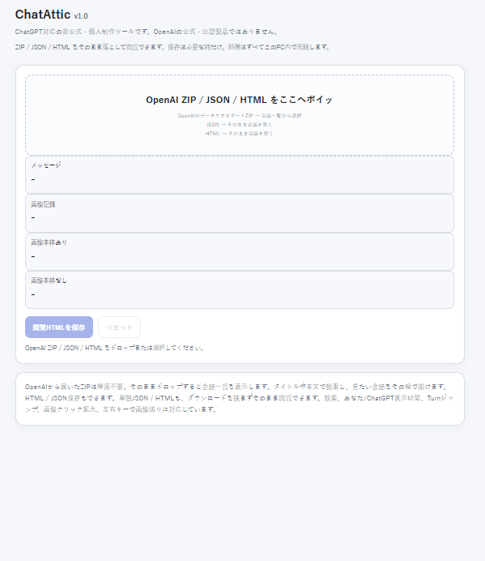
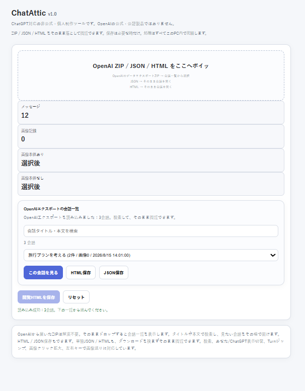
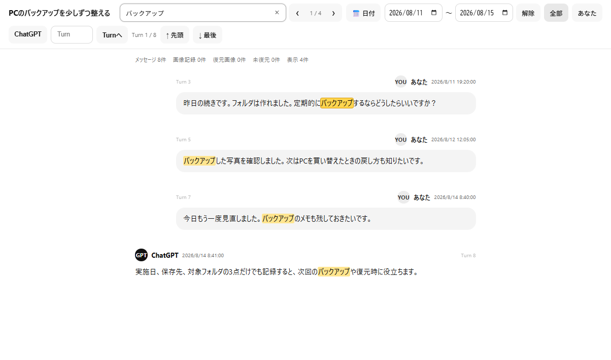

ChatAtticとは
ChatAtticは、ChatGPTの会話を保存・検索・閲覧するために作った、 Chrome向けのツールです。
表示中のChatGPT会話を保存できるほか、 OpenAIからエクスポートした ZIP / JSON / HTML を PC上で読み込んで閲覧できます。
OpenAIエクスポートZIPは解凍不要です。 複数の会話が含まれている場合は、 検索して読みたい会話を選択できます。
なぜ作ったか
短い会話なら、ブラウザのPDF保存やHTML保存でも十分です。
ただ、長い会話では途中が空白になるなど、 うまく保存できないことがありました。
そこで、ChatGPTの会話を保存して、 あとから検索しながら読み返せるように ChatAtticを作りました。
主な機能
表示中の会話を保存
ChatGPTで現在表示している会話を、 Chrome拡張から保存できます。
OpenAI ZIPをそのまま閲覧
OpenAIエクスポートZIPを解凍せず、 そのまま読み込んで会話を閲覧できます。
JSON / HTML対応
JSONやHTML形式の会話データも ChatAtticで読み込んで閲覧できます。
会話内検索
会話本文を文字検索し、 検索結果の前後へ移動できます。
日付・発言者フィルター
開始日～終了日の範囲や、 「あなた」「ChatGPT」で表示を絞り込めます。
画像を含むデータの閲覧
画像を含む保存データも ビューア上で確認できます。
画面

ファイルをドラッグ＆ドロップして読み込めるChatAtticホーム画面

OpenAIエクスポートZIPから会話を選択

本文検索・日付範囲・発言者フィルターに対応したChatGPTビューア
使い方
インストール
ChatAttic_v1.0.zipを任意の場所へ解凍します。- Chromeで「拡張機能を管理」を開きます。
- 右上の「デベロッパー モード」をオンにします。
- 「パッケージ化されていない拡張機能を読み込む」を押します。
- 解凍した
ChatAttic_v1.0フォルダを選択します。 - 必要に応じてChatAtticをツールバーへピン留めします。
v1.0はChromeでの利用を基本としています。
表示中の会話を保存
- ChatGPTで保存したい会話を開きます。
- ChatAtticの拡張機能アイコンを押します。
- 「会話を保存」を実行します。
- 保存したデータをChatAtticで読み返します。
ZIP / JSON / HTMLを見る
ChatAtticの入口画面を開き、 中央の読み込みエリアへファイルをドラッグ＆ドロップします。
OpenAIエクスポートZIPは解凍不要です。
ZIP内に複数の会話がある場合は、 読みたい会話を選んで「選択した会話を開く」を押します。 別タブの「ChatGPTビューア」で閲覧できます。
ビューア
- 会話を検索：会話本文を検索します。
- ‹ 1 / 4 ›：検索結果の前後へ移動します。
- 日付：開始日～終了日で発言を絞り込みます。
- あなた / ChatGPT：発言者で表示を絞り込みます。
- 解除：絞り込み条件を解除します。
データと安全性
OpenAIエクスポートZIP / JSON / HTMLの閲覧処理は PC内で行います。
読み込んだHTMLについては、
script / iframe などの実行要素や、
外部HTTP/HTTPSリソースを遮断する対策を入れています。
巨大なZIPについても、 安全のため読み込みサイズに上限を設けています。
scripting：
ChatGPT画面で会話保存処理を実行するために使用します。https://chatgpt.com/*：
ChatGPT上で会話保存処理を動かすために使用します。
対応環境
非公式ツールについて
ChatAtticは個人制作の非公式ツールです。
OpenAIによる公式・公認・提携製品ではありません。 ChatGPTおよびOpenAIの名称は、 それぞれの権利者に帰属します。
Download / Source
最新版、更新履歴、ソースコードは GitHub上の公式リポジトリから確認できます。